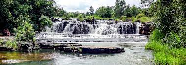

Présentation
Les Cascades de Karfiguéla, situées près de Banfora, sont un site naturel magnifique où l'eau coule en plusieurs niveaux.
Histoire et Géographie
Ce site emblématique du Burkina Faso se trouve à 12 km de Banfora et offre un cadre verdoyant exceptionnel.
Activités
- Randonnée à travers la nature
- Baignade dans les eaux fraîches
- Observation de la faune et de la flore
- Photographie et exploration
Informations pratiques
Localisation : À 12 km de Banfora
Tarifs : 1000 F CFA pour les étrangers, 500 F CFA pour les nationaux
Horaires : Ouvert toute l'année
Contact
Pour plus d'informations, contactez : +20 91 19 56